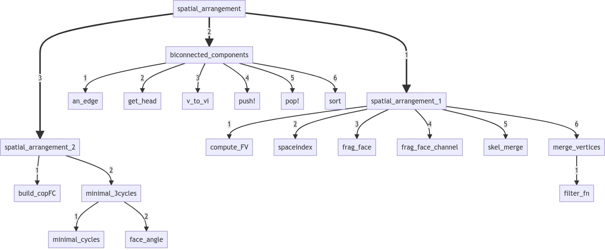

Studio Preliminare
spatial_arrangement.jl
L'algoritmo TGW 3D è implementato all'interno del file spatial_arrangement.jl

Funzioni presenti
spatial_arrangement:
Calcola la partizione dei complessi cellulari dati, con scheletro di dimensione 2, in 3D.
Un complesso cellulare è partizionato quando l’intersezione di ogni possibile paio di celle del complesso è vuota e l’unione di tutte le celle è l’insieme dello spazio Euclideo. La funzione ritorna la partizione complessa come una lista di vertici V e una catena di bordi EV, FE, CF.
spatial_arrangement_1:
Si occupa del processo di frammentazione delle facce per l’utilizzo del planar arrangement.
- <u>compute_FV:</u>
Ritorna l’array FV di tipo Lar.Cells dal prodotto di due array sparsi in input di tipo Lar.ChainOp.
- <u>spaceindex:</u>
Dato un modello geometrico, calcola le intersezioni tra i bounding box. Nello specifico, la funzione calcola le 1-celle e il loro bounding box attraverso la funzione boundingBox. Si suddividono le coordinate x e y in due dizionari chiamando la funzione coordintervals. Per entrambe le coordinate x e y, si calcola un intervalTree cioè una struttura dati che contiene intervalli. La funzione boxCovering viene chiamata per calcolare le sovrapposizioni sulle singole dimensioni dei bounding Box. Intersecando quest’ultime, si ottengono le intersezioni effettive tra bounding box. La funzione esegue lo stesso procedimento sulla coordinata z se presente. Infine, si eliminano le intersezioni di ogni bounding box con loro stessi.
- <u>frag_face:</u>
Effettua la trasformazione in 2D delle facce fornite come parametro sigma, dopo di che ogni faccia sigma si interseca con le facce Presenti in sp_index sempre fornito come parametro della funzione.
- <u>skel_merge:</u>
Effettua l’unione di due scheletri che possono avere 1 o 2 dimensioni.
- <u>merge_vertices:</u>
Effettua l’unione dei vertici, dei lati e delle facce vicine.
biconnected_components:
Calcola le componenti biconnesse del grafo EV rappresenato da bordi, ovvero coppie di vertici.
- <u>an_edge:</u>
Funzione che, dato in input un punto, prende un lato connesso ad esso.
- <u>get_head:</u>
Funzione che, dato in input un lato e la coda, fornisce la testa
- <u>v_to_vi:</u>
Funzione che, dato un vertice in input, ritorna falso se la prima occerrenza della matrice è pari a 0 oppure ritorna il valore trovato.
- <u>push!:</u>
Inserisce uno o più oggetti nella matrice.
- <u>pop!:</u>
Rimuove l’ultimo oggetto nella matrice e lo ritorna.
- <u>sort:</u>
Ordina la matrice e ne ritorna una copia.
spatial_arrangement_2:
Effettua la ricostruzione delle facce permettendo il wrapping spaziale 3D.
- <u>minimal_3cycles:</u>
Funzione che riporta i parametri dati in input in 3 dimensioni e calcola le nuove celle adiacenti per estendere i bordi della figura geometrica. Infine ritorna la matrice sparsa tridimensionale.
- <u>build_copFC:</u>
Funzione alternativa alla precedente.